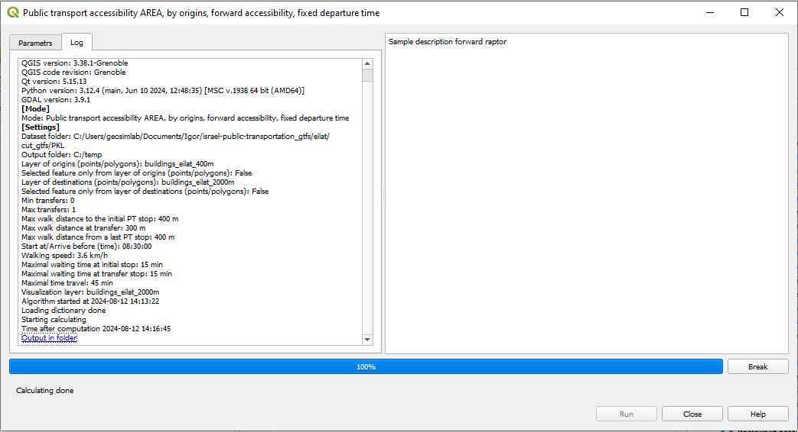

5. Public Transport: Accessibility AREA, fixed start or arrival time¶
5.1. The necessary datasets¶
GTFS dictionary, see Building the Accessibility dictionary (pkl)
The layer of buildings that must be opened in the current QGIS project.
5.2. The computation steps¶
Run the plugin and choose
Public transport accessibility AREA -> Forward accessibility AREA, fixed departure time.orPublic transport accessibility AREA -> Backward accessibility AREA, fixed arrival time.Enter parameters in the dialog window:
Dictionary folder: The folder of the dictionary, must contain
stops.pkl,stoptimes.pkl,transfers_dict.pkl,idx_by_route_stop.pkl, androutes_by_stop.pklOutput folder: The folder to store the results of the computation.
Layer of origins/Layer of destinations: The layer of the origins for the Forward or the layer of destinations for the Backward accessibility.
Visualization layer: The visualization layer - the layer of buildings, or another layer of features that have identifiers of the buildings ADD LINK.
Min transfer: Minimal number of the PT trip transfers (usually, 0).
Max transfer: Maximal number of the PT trips transfers, currently 2 or less.
Max walk distance to the initial PT stop, m: Maximal acceptable for travelers walking distance between the Origin of a trip and and the first bus stop, meters (default - 400 m).
Max walk distance at transfer, m: Maximal acceptable for travelers walking distance between two stops at the transfer, meters (default - 150 m).
Max walk distance from a last PT stop, m: Maximal acceptable for travelers walking distance between the last stop of a trip and the destination, meters (default - 400 m).
Start at/Arrive before (hh:mm:ss): Forward accessibility - the trip start time; Backward accessibility - the latest arrival to destination
Walking speed (km/h): Walking speed.
Maximal waiting time at initial stop, min: Maximal waiting time at the initial stop of the trip, minutes.
Maximal waiting time at transfer stop, min: Maximal waiting time at the transfer, minutes.
Maximal time travel, min: Maximum total trip time.
Click Run to start. The progressbar shows the progress of the computations. You can break the computations by pressing Break.
Note
If more than 10 buildings are selected for AREA calculations, you will be warned that the output table may be very large.
It the Forward AREA regime, the report contains all the details of every possible trip from the O-buildings to each of the buildings that can be reached form the origin in maximun total travel time. It the Backward AREA regime, the report contains all the details of every possible trip to the D-buildings from each of the buildings from which the destination can be reached in maximun total travel time. The description regards every trip leg and every transfer. Currently, the maximum number of the PT trip transfers is 2.
5.3. The structure of the report¶
Attribute |
Meaning |
|---|---|
Origin_ID/Destination_ID |
ID of the building of origin or destination |
Start_time/End time |
Time the trip must start or end |
Walk_time1 |
Walking time to the initial stop |
BStop_ID1 |
ID of the inital stop |
Wait_time1 |
Time of waiting for a bus at the intial stop |
Bus_start_time1 |
Start time of the first ride of a trip |
Line_ID1 |
ID of the line used for the first ride of a trip |
Ride_time1 |
Duration of the first ride of a trip |
AStop_ID1 |
Alighting stop of the first ride of a trip |
Bus_finish_time1 |
End time of the first ride of a trip |
Description of transfer |
The same details as for the first leg of a trip |
Next legs and transfers |
If necessary. Maxumum number of transfers is 2 |
DestWalk_time |
Walking time to a destination |
Destination_ID |
ID of the buidilng of destination |
Destination_time |
Time of arrival to destination |
Duration |
Total trip duration |
The Backward option output includes the additonal attribute
Arrives before |
What does it MEAN??? WHY DO WE NEED IT??? |
5.4. The example: Accessibility of the GESHER theater in Yafo, Tel Aviv, in 2018 and 2024¶
EXPLAIN THE GOAL OF THE EXAMPLE - RED LINE, etc.
When the computations are finished, the Log tab contains the path to the results Output in folder and the copy of the Layer of origin/destination buildings.
The results visualized with the Voronoi polygons and h11 hexagons are presented below